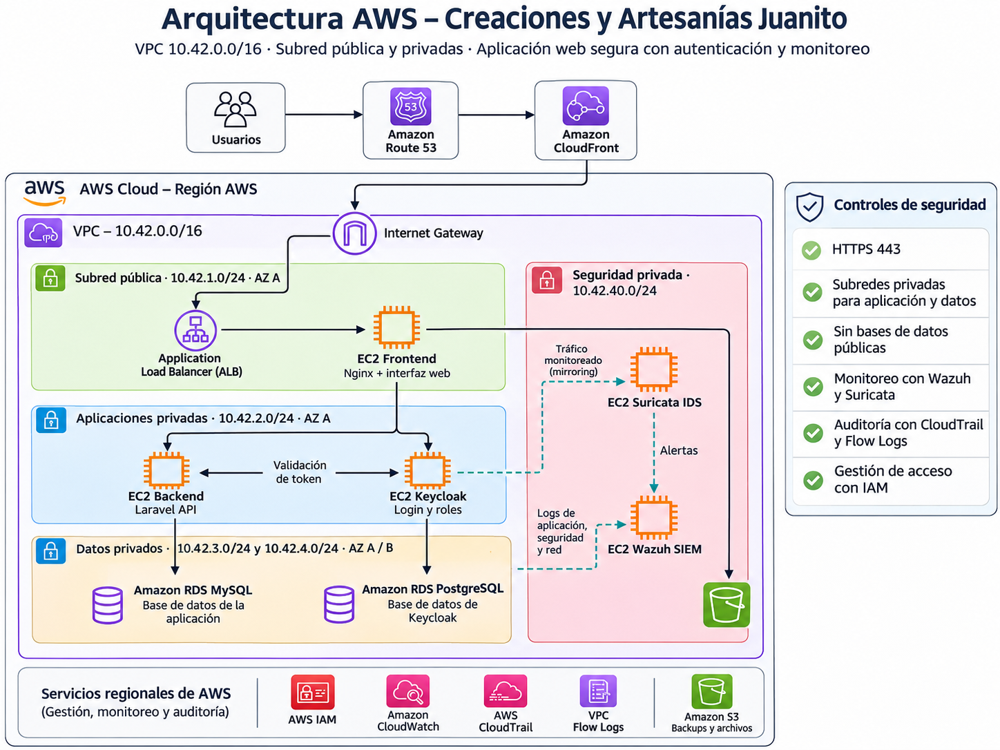

Infraestructura tecnológica para Creaciones y Artesanías Juanito
Documentación académica del análisis y diseño de una arquitectura de red y servicios en Amazon Web Services (AWS).
Este portal reúne los dos informes CE0311 y CE0331 y una vista global de los componentes propuestos: VPC, subredes públicas y privadas, aplicaciones, bases de datos, identidad, monitoreo y controles de seguridad.
Arquitectura general AWS
Vista consolidada del diseño lógico propuesto. La imagen es conceptual; no representa por sí sola pruebas de implementación de cada recurso.

CE0311 · S1 · E1 — Análisis y Diseño de Red
Entregable de conectividad
Diseño de VPC y subredes, flujos entre frontend, backend e identidad, controles de tráfico, direccionamiento y monitoreo.
CE0331 · S1 · E2 — Análisis y Diseño de Centro de Datos
Entregable de infraestructura AWS
Diseño de servicios cloud, capacidad, almacenamiento, seguridad, disponibilidad y continuidad del sistema.
Alcance y limitaciones
Importante para la evaluación: estos documentos describen un diseño centrado exclusivamente en AWS. La rúbrica de CE0311 y CE0331 contempla también infraestructura híbrida, segmentación local y VMware ESXi. Esos criterios no quedan completamente cubiertos por esta variante 100 % cloud.